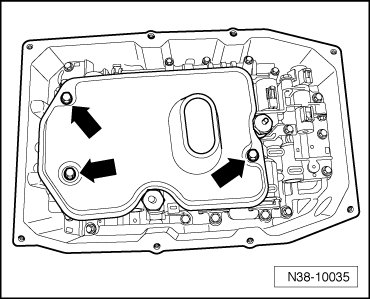
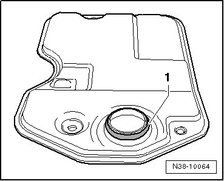
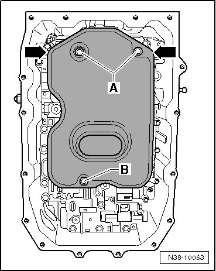

Fluid Filter - A/T: Service and Repair
Oil Filter
Special tools, testers and auxiliary items required
• Torque wrench (VAG 1410)
Removing
- Remove oil pan. Refer to --> [ Oil Pan ] Service and Repair.
- Remove bolts - arrows -.

- Pull off oil filter.
- Remove the oil filter sealing ring from its seat in the valve body.
Installing
Short Description
First install the oil filter loosely. Then center it and press it into the valve body.
CAUTION!
Proceed with caution so the sealing ring is seated correctly and is not damaged.
Installing
- Coat a new sealing ring - 1 - with Automatic Transmission Fluid (ATF) and slide it onto the suction collar.

- Position the oil filter loosely on the valve body, do not press it in.
- Now loosen both bolts - A - approximately 3 turns (no more!) in the valve train.
- Install the bolt - B - halfway (approximately 5 turns).

Oil Filter, Centering
The oil filter centers itself noticeably in the valve body seat.
- Center the oil filter and press into the valve body as far as the stop by pressing evenly on the corners - arrows -. Hold it firmly in this position.
- Counter turn bolts - A - and - B - by hand.
- Tighten the oil filter.
- Install oil pan. Refer to --> [ Oil Pan ] Service and Repair.
- After installation, fill with ATF, check ATF level, and top off. Refer to --> [ ATF Level Checking and Filling ] ATF Level Checking and Filling.
Tightening Specifications